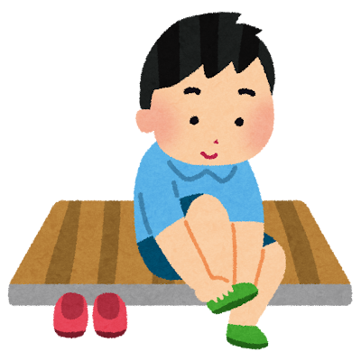

空間の区別
Distinction of Space
日本には、建物の「外」と「内」を明確に区別し、屋内を特別な空間として扱う文化があります。
Japanese culture clearly distinguishes between the "outside" and "inside" of a building, treating the indoors as a special space.

日本には、建物の「外」と「内」を明確に区別し、屋内を特別な空間として扱う文化があります。
Japanese culture clearly distinguishes between the "outside" and "inside" of a building, treating the indoors as a special space.
靴を脱ぐことは、外の汚れを持ち込まず、屋内の床や畳を清潔に保つための習慣です。
Taking off shoes is a custom to prevent bringing in outside dirt and to maintain the cleanliness of the floors and tatami mats.
靴を脱ぐという行為には、その場所の歴史や空間に対する敬意が込められています。
The act of removing shoes demonstrates respect for the history and the space itself.